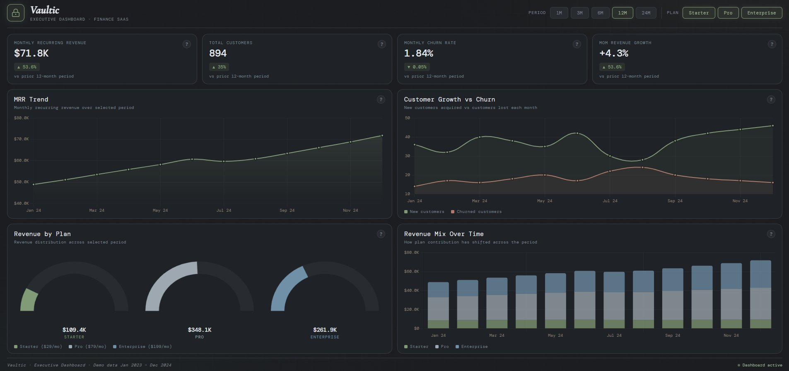

Analytics, automation and workflow systems — built to save time, reduce noise and surface insight.
Cape Town, South Africa.
"I turn fuzzy problems into systems you can trust — then teach the robots to run them so humans can do the thinking."
I'm a Technical Solutions Manager based in Cape Town with 9 years at
EDGE Education — a role I created by identifying what the business was missing and
building the systems to address it.
I don't just build dashboards. I ask why the numbers look the way they do,
who needs to understand them, and what decision they're trying to make. That perspective —
seeing the full picture before touching a single formula — is what makes the difference
between a report and an insight.
From interactive financial dashboards to automated billing pipelines — each project solves a real problem with clean, purposeful design.

A fully interactive financial SaaS reporting dashboard featuring MRR trends, customer growth vs churn, revenue by plan, and a revenue mix breakdown. Built with vanilla HTML, CSS and JS — no frameworks, no dependencies.
A glimpse into how I approach problems — not just what I've done, but how I do it.
"How do you handle situations where different teams see the same problem differently?"
I bring them into the process early. When everyone understands the why behind a decision — not just the what — alignment happens naturally. I've found that the best solutions rarely come from one perspective alone. My job isn't to have all the answers; it's to create the conditions where the right answer can emerge from the people closest to the problem.
Whether you have a role in mind or just want to see what's possible —
I'd love to hear from you.